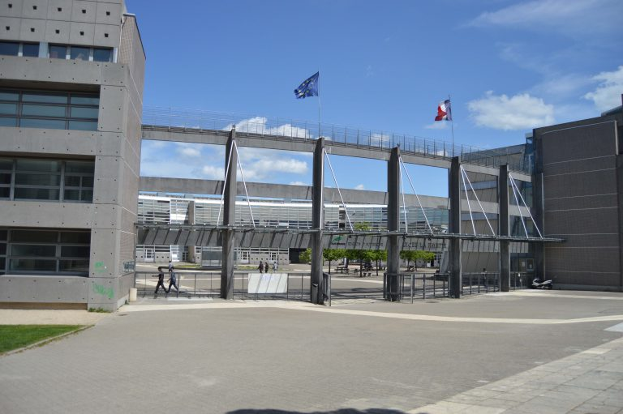
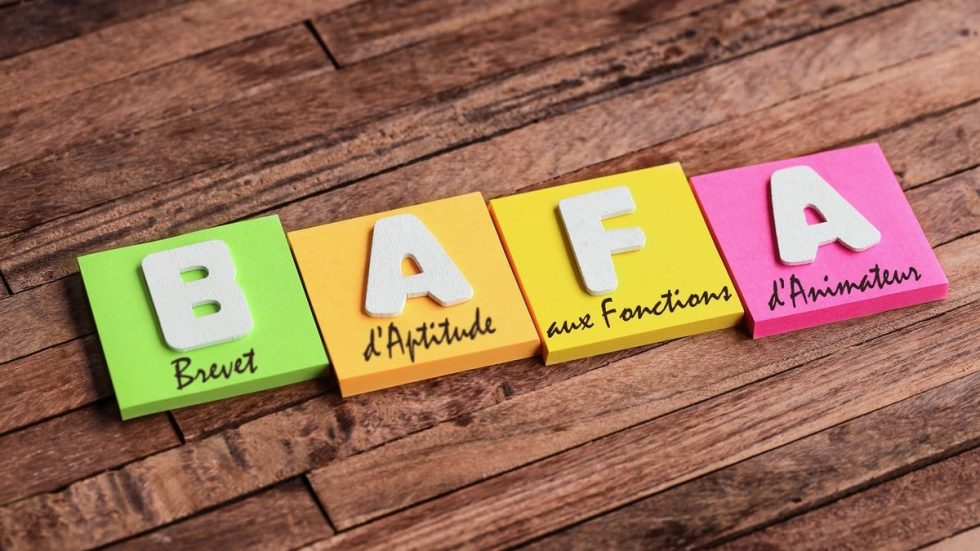
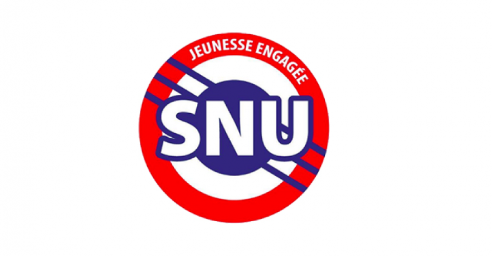

Formations et diplômes
BUT Informatique

En septembre 2024, j'ai commencé mon BUT informatique, Je l'ai intégré directement après l'obtention de mon baccalauréat et j'y étudie pour devenir développeur informatique. Il me permet de développer mes compétences techniques tel que Entity Framework, le React Native, le Kotlin, le PHP, le C, C++, C#, le shell, l'HTML, le CSS et python. Il me permet aussi de développer mes qualités tel que l'autonomie, la rigueur, la communication et le travail d'équipe.
Lycée Lafayette

En septembre 2021, je suis entré au lycée lafayette, là-bas, j'y ai découvert la spécialité numérique et sciences de l'informatique. Dans cette spécialité j'ai découvert les bases de données, python et l'arduino. C'est grâce à cela que j'ai pu faire pour la première fois de l'informatique, ce qui l'a permis de trouver vers quel domaine je voulais m'orienter. C'est grâce à cette spécialité que j'ai décidé d'intégrer ce BUT.
BAFA

De aout 2023 à octobre 2024, j'ai passé mon BAFA. Cela m'a permis de trouver un travail pendant les vacances. Grâce au BAFA, j'ai pu apprendre à travailler en équipe, gérer des travaux d'équipe et à assumer des responsabilités.
Service National Universel

De juin 2022 jusqu'à mai 2023 j'ai effectué le service national universel. J'ai passé un un séjour de cohésion de 2 semaines dans l'Isère, avec des personnes que je ne connaissais pas où nous avons fait des activités et des sortes de cours. Ce séjour m'a permis d'apprendre la cohésion. Une fois ce séjour fait, je suis allé faire ma seconde partie à la gendarmerie où nous avons effectué du sport et appris les différents métiers là-bas. Grâce à cela j'ai pu apprendre la discipline.